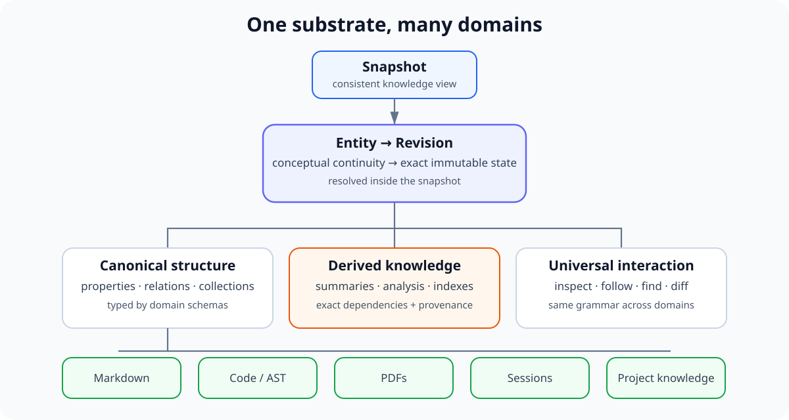
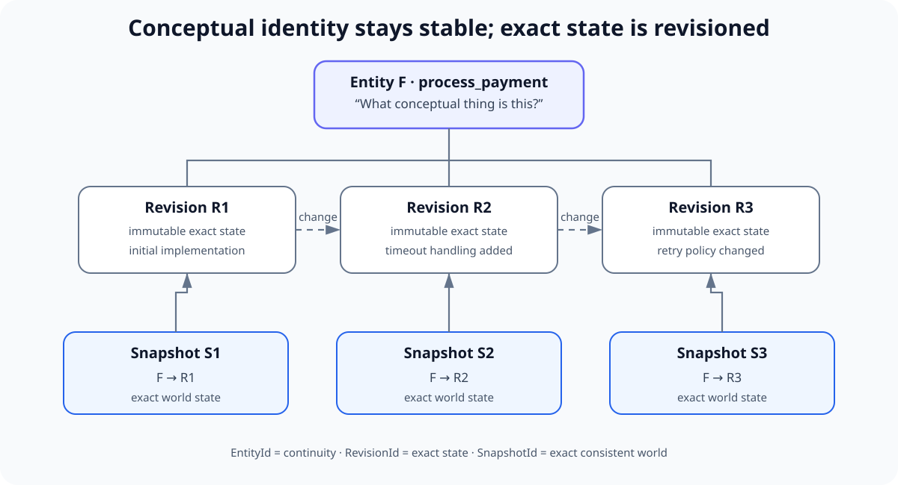
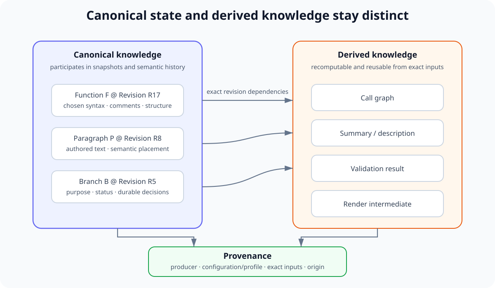
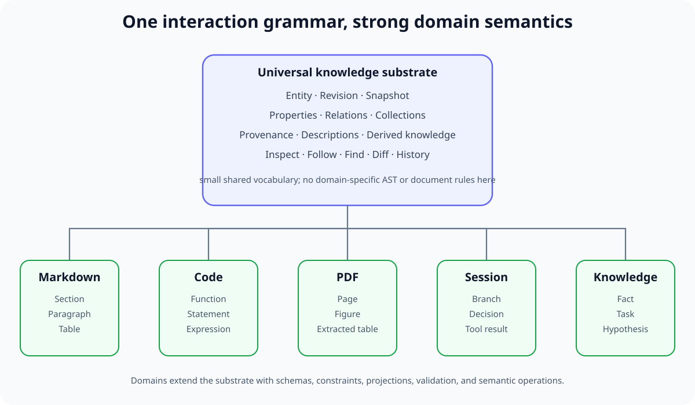
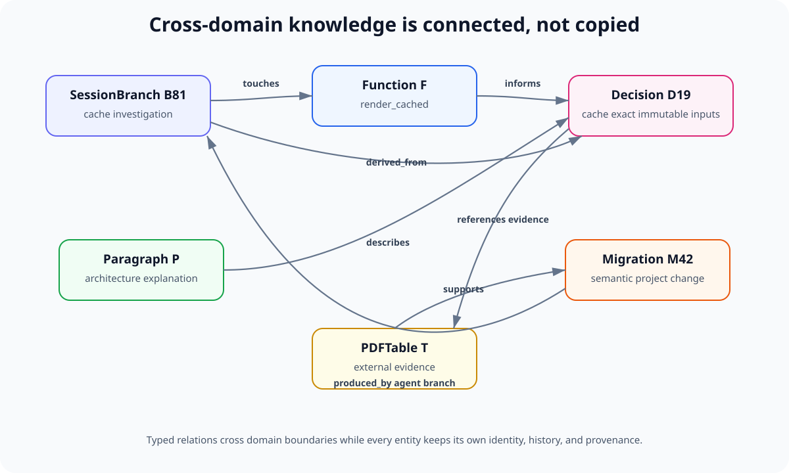

Universal Knowledge Model¶
1. Purpose¶
Scriberig uses one universal typed knowledge model for all supported domains.
The same underlying model must be able to represent source code, Markdown, PDFs, sessions, agent branches, decisions, tool results, styles, migrations, derived analysis, and future domains without introducing a separate persistence architecture for each one.
The purpose of this document is to define the domain-independent concepts that every specialization builds on.
The central rule is:
A domain adds meaning through schemas, types, relations, constraints, and projections. It does not replace the universal knowledge model.
This document intentionally stays above concrete Rust types, SQL tables, API endpoints, and parser implementations. Those belong in lower-level designs.
2. Design Goals¶
The universal model must support the following properties.
2.1 One substrate for different domains¶
A paragraph, function, PDF page, session branch, decision, table cell, tool result, and style are different kinds of knowledge, but they should participate in the same storage, history, query, provenance, and navigation systems.
2.2 Strong domain meaning without forced uniformity¶
The model must be universal without pretending that all objects behave the same way.
A Rust expression is not interchangeable with a PDF table cell. A session branch does not have the same constraints as a Markdown section.
Domains specialize the shared substrate with their own schemas and operations.
2.3 Stable semantic access¶
Applications and agents should work with semantic objects and relations rather than reconstruct meaning from filenames, line numbers, byte ranges, or transcript positions whenever a richer object exists.
2.4 Progressive disclosure¶
The model must support coarse-to-fine navigation.
A consumer should be able to inspect a project, document, module, function, branch, or page before deciding which children or relations to follow.
2.5 Exact history and reproducibility¶
The model must work with immutable revisions and snapshots so that historical references identify exact states rather than whatever happens to be current when they are read.
2.6 Efficient derived knowledge¶
Descriptions, summaries, compiler analysis, render intermediates, embeddings, validation results, and other derived data must be attachable to exact immutable inputs and reusable while those inputs remain unchanged.
2.7 Reusable outside the agent product¶
Nothing in the knowledge model may require an agent runtime.
The store, graph, schemas, queries, domains, and projections must remain useful to ordinary applications.
3. Model Overview¶
The universal model is a typed graph of semantic entities and relationships interpreted within a snapshot.

Figure 1. A snapshot resolves semantic entities to immutable revisions. The same substrate supports canonical structure, derived knowledge, universal interaction, and independently specialized domains.
Conceptually:
Snapshot
|
v
Entity -> Revision
|
+-- properties
+-- relations --------> Entity
+-- collections ------> Entity, Entity, Entity, ...
+-- descriptions
+-- provenance
+-- derived knowledge
Different domains define different entity types and relation meanings.
Examples:
Document --contains--> Section
Section --contains--> Paragraph
Table --rows------> TableRow
TableRow --cells-----> TableCell
Module --contains--> Function
Function --body------> CodeGroup
CodeGroup --contains-> Statement
Function --calls-----> Function
PDFDocument --pages--> PDFPage
PDFPage --contains--> Paragraph
PDFPage --contains--> Figure
Session --branches--> Branch
Branch --contains--> Turn
Decision --derived_from--> Branch
Migration --base_snapshot--> Snapshot
Migration --result_snapshot--> Snapshot
The graph is not required to be a tree.
Containment may be tree-like in some domains, but references, provenance, dependencies, calls, lineage, and other relationships naturally form a graph and may contain cycles.
4. Entities¶
An entity identifies a conceptual thing that may persist through change.
Examples include:
- a project;
- a document;
- a paragraph;
- a table;
- a row;
- a cell;
- a module;
- a function;
- a code group;
- a statement;
- a PDF page;
- a session;
- a session branch;
- a decision;
- a migration;
- a rendering style.
An entity answers the question:
What thing is this?
An entity does not by itself imply one exact historical state.
Its exact state is determined by its revision in a given snapshot.
This distinction is important because conceptual continuity and exact content are different concerns.
For example, the same conceptual function may be edited many times. The function entity remains the stable semantic handle while each exact state is represented by a separate immutable revision.
5. Revisions¶
A revision is one exact immutable state of an entity.
Revisions answer the question:
What was this thing exactly at this point in history?
A revision may contain:
- typed properties;
- references to other entities;
- collection membership;
- domain-specific structural data;
- metadata that is considered canonical for that domain.
A revision never changes in place.
A semantic edit creates another revision.
The relationship between entity identity and revision identity allows consumers to choose the correct level of reference.
Use an entity reference when continuity matters:
Use an exact revision reference when reproducibility matters:
The detailed identity and storage rules for entities, revisions, and snapshots are defined separately in the identity and snapshot design.
6. Snapshots¶
A snapshot represents one complete consistent view of canonical knowledge.
Conceptually, a snapshot resolves entities to exact revisions:
Snapshot S42
Document D -> Revision DR8
Paragraph P -> Revision PR3
Function F -> Revision FR19
Branch B -> Revision BR5
Decision X -> Revision XR2

Figure 2. Entity identity expresses conceptual continuity. Revision identity expresses one exact immutable state. Snapshot identity fixes the exact revisions visible in one consistent knowledge world.
The knowledge graph must always be interpreted relative to an explicit or implicit snapshot.
This avoids ambiguity such as asking for "the children of this function" without defining which historical state of the project is being observed.
Consumers may commonly work against a current snapshot, but the underlying model must make historical snapshot selection possible.
7. Entity Types¶
Every entity has a type defined by a schema.
Examples:
Document
Section
Paragraph
Table
TableRow
TableCell
Module
Function
Parameter
Statement
Expression
Comment
PDFDocument
PDFPage
Figure
Session
Branch
Turn
Decision
ToolInvocation
ToolResult
Types provide semantic meaning and determine which properties, relations, operations, validations, and projections are available.
The universal store should not contain hard-coded knowledge of every domain type.
Instead, domains register or provide schemas understood by higher layers.
The model therefore separates:
from:
8. Properties¶
Properties represent typed values that belong directly to a revision.
Examples:
Paragraph.text
Function.name
Comment.kind
Branch.status
Style.max_width
PDFPage.number
Decision.state
Properties are appropriate for values whose meaning belongs locally to the entity revision.
Properties should not be used to encode relationships that need independent identity, traversal, history, provenance, or reuse.
For example, this is conceptually weaker:
than an explicit relation:
when the called functions are themselves known entities.
The schema defines which properties are required, optional, scalar, structured, ordered, or constrained.
9. Relations¶
Relations connect entities.
A relation has a type and a semantic direction.
Examples:
contains
calls
references
derived_from
supersedes
implements
produced_by
validated_by
rendered_from
belongs_to
Relations are first-class parts of the knowledge model rather than conventions hidden inside text fields.
This enables universal operations such as:
follow(entity, relation)
parents(entity)
related(entity)
find paths
query by relation
inspect provenance
Domains define what a relation means and which source and target types are valid.
A relation may be canonical or derived.
For example:
may be canonical document structure, while:
may be derived from compiler or static-analysis output.
The graph layer must preserve that distinction.
10. Direction and Reverse Navigation¶
Canonical relationships should have a clear ownership direction.
For containment, the preferred direction normally points from container to contained entity:
The paragraph does not need to store the section as part of its own canonical identity merely so that reverse navigation is possible.
Reverse navigation can be provided by indexes:
This prevents unnecessary revision churn when an entity is moved between containers.
The same principle applies to many relations.
A relation should be stored in the direction that best represents canonical ownership or semantic responsibility. Reverse traversal should normally be derived.
11. Collections¶
Many semantic structures contain ordered or unordered groups of entities.
Examples:
- paragraphs inside a section;
- rows inside a table;
- cells inside a row;
- parameters of a function;
- statements inside a block;
- pages in a PDF document;
- turns inside a session branch.
Collections must be represented explicitly enough to preserve the semantics that matter.
An ordered collection must preserve order.
An unordered collection must not gain accidental semantic meaning from physical storage order.
The model should distinguish:
from:
The detailed physical representation of collections belongs to lower-level design.
At the knowledge-model level, the important invariant is that collection semantics are explicit.
12. Containment Is Not the Whole Graph¶
Containment provides useful hierarchical navigation, but Scriberig must not reduce all knowledge to one ownership tree.
Consider a function:
The same function may also participate in:
Function --calls--> Function
Function --references--> Type
Function --described_by--> Description
Function --changed_by--> Migration
Function --mentioned_in--> SessionBranch
Likewise, a paragraph may belong to a document hierarchy while also being referenced by a decision, summary, annotation, session, or external projection.
The universal model is therefore a graph with hierarchical views, not a single universal tree.
13. Schemas¶
Schemas define how a domain specializes the universal model.
A schema may define:
- entity types;
- property definitions;
- relation types;
- valid relation endpoints;
- collection semantics;
- required and optional structure;
- validation rules;
- canonical versus derived fields;
- description strategies;
- supported projections;
- supported semantic operations;
- schema version.
For example, a Markdown schema may say that a Section can contain ordered block entities and may have a heading.
A Rust schema may define functions, parameters, statements, expressions, comments, attributes, and syntax-specific relationships.
A session schema may define branches, turns, goals, decisions, tool invocations, and tool results.
Schemas should be evolvable without changing the universal storage architecture.
14. Domain Adapters¶
A domain adapter translates between external domain representations and the universal knowledge model.
A domain adapter may provide:
- parsing;
- schema definitions;
- canonicalization;
- rendering;
- reconciliation;
- validation;
- semantic operations;
- derived analysis;
- domain-specific queries;
- domain-specific UI views.
Examples:
The adapter is responsible for preserving the distinctions that matter to its domain.
The universal store should not need to understand Markdown headings, Rust macro syntax, or PDF layout rules directly.
15. Canonical Knowledge¶
Canonical knowledge is the state that participates in snapshots and semantic history.
A domain must define what it considers canonical.
For Markdown, canonical knowledge may include:
- sections;
- paragraphs;
- lists;
- tables;
- links;
- code blocks;
- meaningful inline structure.
For source code, canonical knowledge may include:
- chosen syntax;
- functions;
- statements;
- expressions;
- comments;
- macro invocations;
- attributes;
- human-oriented code-group structure where that structure is intentionally preserved.
Canonical knowledge should preserve choices that matter to the author or domain.
The model must not automatically collapse two representations merely because some compiler or renderer currently considers them equivalent.
16. Derived Knowledge¶
Derived knowledge is computed from canonical knowledge or external evidence.
Examples include:
- symbol resolution;
- type information;
- call graphs;
- control-flow graphs;
- data-flow graphs;
- compiler diagnostics;
- PDF text extraction indexes;
- embeddings;
- summaries;
- descriptions;
- model-generated explanations;
- validation results;
- render intermediate representations.
Derived knowledge must identify its dependencies and provenance.
Conceptually:
DerivedObject
source: Function F at Revision R17
producer: rust-analyzer configuration C
profile: call-graph-v2
result: ...
Derived knowledge is not automatically authoritative merely because it is stored in the same database.
Consumers must be able to distinguish canonical state from parser facts, compiler facts, user-authored annotations, and model-generated interpretations.

Figure 3. Derived artifacts remain separate from canonical semantic state. They point to exact immutable inputs and record their producer and configuration through provenance.
17. Provenance¶
Knowledge should carry enough provenance to answer:
- where did this come from?
- who or what produced it?
- which exact revisions were used?
- which tool, parser, compiler, model, or configuration produced it?
- is it canonical, imported, inferred, generated, or validated?
Possible provenance sources include:
user
authoritative_import
parser
compiler
static_analysis
agent
model_summary
system
external_tool
migration
Provenance is especially important because one universal store may contain both hard facts and uncertain interpretation.
For example:
and:
must remain distinguishable.
18. Descriptions¶
Important entities should be able to expose short descriptions for navigation.
Examples:
Function
"Validates an order and persists a payment."
Paragraph
"Explains why snapshots change globally."
PDFPage
"Contains the report's methodology and first results table."
Branch
"Investigates render-cache invalidation."
Descriptions are primarily attention and navigation aids.
They let humans and agents choose what to inspect without loading full content.
Descriptions may be:
- user-authored;
- parser-derived;
- compiler-derived;
- statically inferred;
- model-generated.
Their provenance must be visible.
Generated descriptions should normally be derived knowledge rather than part of the canonical semantic identity of the described entity.
19. Summaries and Multiple Levels of Detail¶
The same entity may have several useful representations at different information costs.
For example, a function may expose:
identity and one-line description
structural overview
code-group overview
statement-level structure
full syntax
rendered source
A session branch may expose:
A document section may expose:
The universal model should allow these derived representations to coexist and be selected intentionally.
This is the basis for progressive disclosure.
20. Semantic Handles¶
Every important object returned through APIs should have a stable semantic handle.
A consumer should be able to receive:
and use those handles in later operations.
Handles should be preferred over incidental coordinates such as:
Projection coordinates remain useful metadata for humans and integrations, but they should not replace semantic identity when a semantic object exists.
21. Files Are Not a Special Knowledge Primitive¶
A file may be:
- an external projection of semantic knowledge;
- an imported source artifact;
- a binary blob;
- a container selected by a domain's layout rules.
The universal knowledge model should not assume that a file is the fundamental unit of meaning.
For example, a function may remain the same conceptual entity when moved from one source file to another.
A document may have Markdown, HTML, plain-text, and web-editor projections without becoming four independent semantic documents.
File paths are therefore domain or projection metadata rather than universal semantic identity.
22. Sessions Use the Same Model¶
Sessions are not a separate persistence system.
A session domain specializes the same knowledge model used by documents and code.
Typical entities include:
Session
Branch
Goal
HumanInput
AgentOutput
Observation
Decision
Question
ToolInvocation
ToolResult
BranchResult
Summary
Task
Typical relations include:
Session --contains--> Branch
Branch --contains--> Turn
Decision --derived_from--> Branch
Branch --touches--> Function
ToolResult --produced_by--> ToolInvocation
A session may directly reference project entities without copying their content into a transcript.
This gives agent history exact semantic references and lets branches remain compactly summarized while still fully retrievable.
23. Project Knowledge Uses the Same Model¶
Facts, decisions, hypotheses, tasks, and open questions may also be represented as entities.
For example:
Decision D19
text: "Canonical syntax revisions are immutable."
status: accepted
D19 --derived_from--> Branch B81
D19 --affects--> StorageArchitecture
D19 --supersedes--> Decision D11
This allows durable knowledge to be promoted from sessions without relying on transcript search as the primary memory mechanism.
A current decision and the historical discussion that produced it remain connected but distinct.
24. Styles Are Knowledge Objects¶
Styles and projection configurations may also be represented in the universal store.
Examples:
A style can have stable semantic identity and immutable revisions like other entities.
The semantic content being rendered does not normally change when only its style changes.
This allows multiple projections of the same knowledge for different users or applications without duplicating the underlying semantic objects.
25. Migrations Relate States, Not Just Text¶
A migration is structured knowledge about change.
It connects a base snapshot to a resulting snapshot and may describe the semantic operations involved.
Examples:
replace paragraph revision
insert entity into collection
remove relation
move collection member
rename symbol
change expression
merge branches
Migrations may reference the entities they affect and the session, user, agent, command, or external edit that produced them.
This allows history itself to participate in the knowledge graph.
26. Universal Queries¶
Because domains share one graph model, a common query vocabulary can work across them.
Examples:
inspect(entity)
children(entity)
relations(entity)
follow(entity, relation)
find(scope, query)
history(entity)
diff(a, b)
describe(entity)
Domain-specific queries may add stronger semantics:
find_callers(function)
find_references(symbol)
list_paragraphs(section)
list_rows(table)
list_branches(session)
These specialized queries should build on the same universal identity, snapshot, relation, and provenance model.
27. Universal Operations and Domain Operations¶
The same distinction applies to editing.
Universal operations may describe graph-level changes such as:
create entity
set entity revision
add relation
remove relation
insert collection member
remove collection member
reorder collection
Domain operations may express stronger intent:
rename heading
replace paragraph
insert table row
rename symbol
extract function
complete branch
supersede decision
Higher-level operations are preferable when they capture useful domain meaning and can be validated more strongly.
All operations ultimately produce explicit semantic changes and a new snapshot rather than bypassing the common change model.
28. Universality Does Not Mean a Single Giant Schema¶
The universal knowledge model must not become one enormous schema containing every possible field for every possible domain.
Instead:
Universal Model
|
+-- common identity and history
+-- common graph concepts
+-- common provenance
+-- common query/navigation model
|
+-- Markdown schema
+-- Rust schema
+-- PDF schema
+-- Session schema
+-- future schemas

Figure 4. The universal layer stays small. Domain schemas preserve strong semantics while reusing the same identity, graph, provenance, history, and interaction concepts.
Domains should be independently evolvable where possible.
The universal layer should contain only concepts that genuinely need to be shared.
29. Universality Does Not Mean Lowest-Common-Denominator Semantics¶
A danger in universal data models is reducing every object to generic key-value pairs and generic edges until domain meaning is lost.
Scriberig should avoid this.
A Function, Paragraph, Branch, and TableRow should remain strongly typed domain concepts.
The universal substrate provides common machinery, while schemas preserve domain semantics.
The goal is:
One interaction grammar, not one undifferentiated data type.
30. Canonical Graph and Derived Indexes¶
The canonical graph should remain conceptually separate from indexes built to make navigation efficient.
Useful derived indexes may include:
entity -> parents
entity -> reverse relations
symbol -> references
function -> callers
type -> implementations
entity -> descriptions
entity -> migrations
entity -> sessions mentioning it
file path -> projection
branch -> touched entities
Indexes are allowed to be backend-specific and optimized aggressively.
They must remain rebuildable from canonical knowledge and declared derived sources.
Applications should not confuse index representation with semantic truth.
31. Knowledge Scope¶
Not every object in the database must belong to one project tree.
The store may contain multiple scopes such as:
- projects;
- imported documents;
- sessions;
- shared styles;
- reusable schemas;
- cached derived objects;
- external references.
Snapshots or roots define which knowledge belongs to a particular consistent view.
This is another reason the universal model should be treated as a graph rather than a filesystem-shaped hierarchy.
32. Cross-Domain Relations¶
A major benefit of one store is that relations may cross domain boundaries.
Examples:
SessionBranch --touches--> Function
Decision --affects--> Module
Paragraph --describes--> ArchitectureConcept
PDFTable --supports--> Decision
Migration --produced_by--> AgentBranch
ToolResult --references--> SourceFunction

Figure 5. Session, code, document, PDF, migration, and project-knowledge entities can reference one another directly through typed relations while retaining independent identity and history.
These cross-domain relationships should not require copying objects between separate databases.
They are ordinary typed relations in the same knowledge system.
This is one of the strongest reasons to begin from a universal model rather than integrate several isolated domain stores later.
33. External References¶
Not all referenced knowledge must be owned by the local store.
The model should allow references to external resources where necessary, such as:
- URLs;
- Git commits;
- package identities;
- external database records;
- remote documents;
- tool-specific identifiers.
External references should be explicit and typed.
Where an external object is imported into canonical knowledge, the imported entity should retain provenance linking it back to its source.
34. Validation¶
Schemas and domain adapters define validity constraints.
The universal model itself can enforce only generic graph invariants.
Domain validation may include:
- required properties;
- allowed relation endpoints;
- collection cardinality;
- structural constraints;
- parser validity;
- compiler validity;
- application-specific invariants.
A proposed revision may exist temporarily in a branch or workspace while invalid, depending on product policy, but promotion to a canonical project state may require validation.
The knowledge model must make validation status explicit rather than assuming all stored objects are valid by definition.
35. Agent-Oriented Consequences¶
The universal knowledge model is especially useful for agents because it provides one consistent navigation discipline.
An agent can learn operations such as:
and apply them to different domains.
The entity being inspected advertises its type, available relations, child counts, descriptions, and domain capabilities.
The agent does not need a completely unrelated tool philosophy for code, PDFs, sessions, and documents.
This reduces tool complexity while preserving specialized domain meaning.
36. Human-Oriented Consequences¶
The same universal model benefits human-facing applications.
A full editor may select one entity and show several synchronized views:
semantic structure
raw database representation
rendered projection
history
relations
migration activity
agent context
A selection of a function, paragraph, branch, or table row can be represented by the same semantic handle even though each domain has a different visual editor.
This enables integrated tools without requiring them to invent separate identity and history systems.
37. Architectural Invariants¶
Lower-level designs must preserve the following rules.
-
All domains use the same fundamental entity, revision, snapshot, relation, provenance, and query concepts.
-
Domain schemas add meaning without replacing the universal storage model.
-
Entity identity represents conceptual continuity; revision identity represents exact immutable state.
-
Knowledge is interpreted within a snapshot.
-
Relations are first-class and typed.
-
Containment is one relation pattern, not the entire knowledge model.
-
Reverse navigation must not require embedding mutable parent identity into children.
-
Canonical and derived knowledge remain distinguishable.
-
Derived knowledge records exact dependencies and provenance.
-
Descriptions and summaries support progressive disclosure but do not silently become canonical truth.
-
Files, line numbers, transcript positions, and other projection coordinates are not primary semantic identity when a semantic entity exists.
-
Sessions use the same knowledge model as project artifacts.
-
Cross-domain relationships are ordinary graph relationships.
-
Schemas preserve strong domain semantics rather than reducing everything to untyped key-value data.
-
Indexes and caches are rebuildable representations, not canonical truth.
-
The universal model remains useful without an agent runtime.
38. What This Document Does Not Decide¶
This document deliberately does not specify:
- the physical database backend;
- the exact Rust crate layout;
- SQL tables;
- binary encodings;
- the exact content-addressing algorithm;
- the snapshot-map implementation;
- API transport formats;
- parser libraries;
- renderer implementations;
- concrete agent tool names;
- UI component structure.
Those decisions belong in lower-level design documents.
The purpose here is to define the semantic contract those implementations must satisfy.
39. Summary¶
Scriberig begins with one universal typed knowledge graph.
The graph contains stable semantic entities whose exact states are represented by immutable revisions and interpreted within snapshots.
Entities have typed properties, relations, and collections. Schemas specialize those primitives into meaningful domains such as Markdown, source code, PDFs, sessions, and project knowledge.
Canonical knowledge is separated from derived analysis and interpretation. Provenance identifies where knowledge came from and how reliable or authoritative it is. Descriptions and summaries provide cheap navigation while exact semantic handles allow precise follow-up operations.
The universal model is deliberately richer than a generic key-value database and deliberately more general than any one AST, document tree, transcript format, or filesystem layout.
Its purpose is to provide one durable semantic substrate on which specialized domains, projections, applications, and agents can all operate.